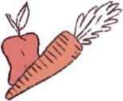
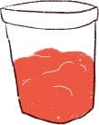

A TRAVÉS DE LA TECNOLOGÍA DIGITAL
PUEDO:
crear videos de cosas que me gustan (bailar y los insectos)
mirar tutoriales para hacer slime
crear un podcast con mis opiniones sobre comer verduras
jugar a muuuuchos jueguitos
mandar emojis y besos a la abuela
ver películas con mi tía que vive en Brasil
investigar sobre los dinosaurios y las sirenas
comprar entradas para el cine
invitar a amigos y amigas al Parque Rodó
Ver diferentes paisajes del mundo